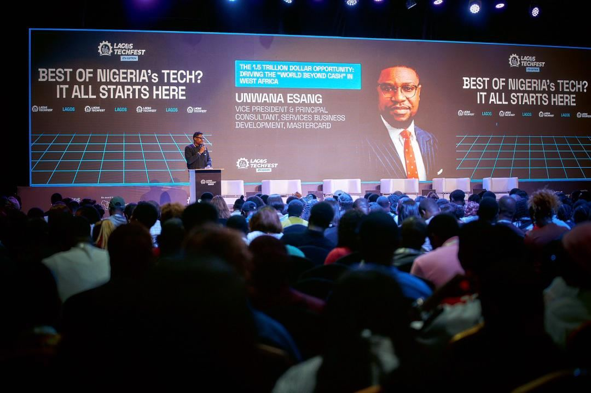

Conferences · Tech
Lagos Tech Fest 2027
- Dates
- –
- Venue
- Civic Centre, Victoria Island (22 Feb) and Landmark Event Centre, Victoria Island (23 Feb main event)
- Location
- Lagos, Nigeria
- Format
- In-person
- Category
- Tech
- Industry
- Technology conference
- Organiser
- Eventhive
- Expected attendance
- 2,950
- Official website
- https://tech.eventhive.ng/
About
7th edition. Official site (fetched 24 Nov 2026): 'Feb 22–23, 2027 · Lagos, Nigeria'. Venues: Nigeria's Tech Leadership Roundtable, 22 Feb 2027, Civic Centre, Victoria Island (Blue & Purple passes); After Dark Hours 22 Feb at Turaka Lagos / Ebony Life Rooftop, VI; Main Event 23 Feb 2027, Landmark Event Centre, VI, 8am–6pm WAT, open to all pass holders. Launch-rate ticket offer is advertised but no numeric prices were captured. Nigeria dates are local (West Africa Time, WAT, Africa/Lagos, UTC+1, no daylight saving).
Topics: startups, enterprise tech, investment, ecosystem.
Official Lagos Tech Fest 2027 site (fetched 24 Nov 2026) publishes a 2026 recap of '2,950+ attendees'. Used as the organiser-stated scale for ranking the 7th edition; not a 2027 forecast.
Sources
- Official — https://tech.eventhive.ng/